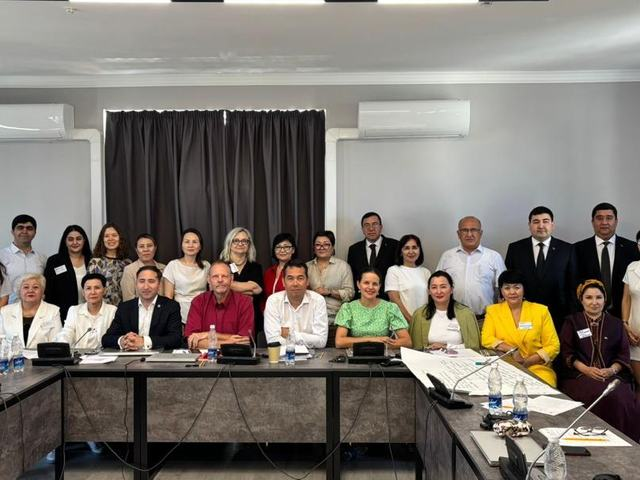

Научная деятельность
Наука
Научные проекты, центры и лаборатории, диссертационные советы, постдокторантура, журнал и конференции университета.
Научные центры и лаборатории
Научные центры и институты
Исследовательские подразделения, обеспечивающие научную работу по направлениям университета.
Совет молодых учёных
Объединение молодых исследователей университета, координирующее их научную деятельность.
Студенческая наука
Научные кружки и исследовательские проекты студентов под руководством преподавателей.
Виртуальный студенческий бизнес-инкубатор
Площадка для развития предпринимательских и прикладных научных инициатив студентов.
TODO: перечень конкретных лабораторий и их оснащение — уточняется по институтам.
Научные проекты и гранты
Университет реализует прикладные и фундаментальные научные проекты, в том числе в рамках грантового и программно-целевого финансирования, а также международных программ (например, Erasmus+ HWCA).
TODO: перечень действующих проектов и объёмы финансирования — будут опубликованы после получения официальных данных.
Диссертационные советы
Диссертационные советы обеспечивают защиту диссертаций и присуждение учёных степеней по научным направлениям университета.
TODO: состав и направления диссертационных советов — будут опубликованы после получения официальных данных.
Постдокторантура
Постдокторантура университета — форма подготовки научных кадров высшей квалификации после защиты докторской диссертации (PhD), ориентированная на углублённые исследования по профилю университета.
Журнал, публикации и конференции
«Вестник науки» КазАТУ им. С. Сейфуллина
Научный журнал университета для публикации результатов исследований сотрудников и партнёров.
Научные конференции
Ежегодные научные и научно-практические конференции университета с публикацией сборников трудов.
Сборники научных конференций
Публикуемые по итогам конференций материалы и доклады участников.